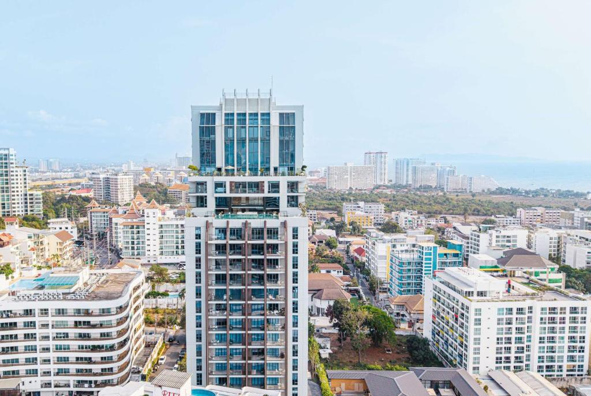
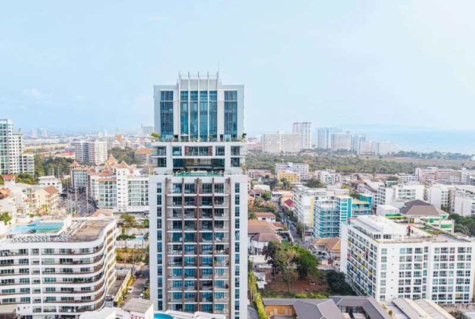

← กลับไปเลือกที่พัก
พัทยา · รายการ 20
Beverly Mountain Bay
ใช้ชีวิตบนเขาพระตำหนัก พร้อมพื้นที่พักผ่อนและวิวเมืองพัทยา
สอบถามรายละเอียดห้อง ↗
YOUR NEXT CHAPTER
พื้นที่ที่เข้ากับ
จังหวะชีวิตของคุณ
Beverly Mountain Bay ตั้งอยู่ในพระตำหนักซอย 5 พัทยา พัฒนาโดย JANTARAPA Co., Ltd. เป็นอาคารสูง 22 ชั้น จำนวน 199 ยูนิต ตามข้อมูลเว็บไซต์โครงการ มีห้องหลายรูปแบบตั้งแต่สตูดิโอถึงดูเพล็กซ์ พร้อมส่วนกลางสำหรับพักผ่อนและออกกำลังกาย เหมาะกับการมองหาที่พักในย่านเขาพระตำหนัก
สระว่ายน้ำ Infinity Edge และพื้นที่พักผ่อน
ฟิตเนส ซาวน่า และล็อบบี้
01 · LOCATION
ตำแหน่งที่พักบน Google Maps
เดินทางและใช้ชีวิต
พระตำหนักซอย 5 ตำบลหนองปรือ อำเภอบางละมุง จังหวัดชลบุรี อยู่ในย่านเขาพระตำหนักระหว่างพัทยาใต้กับจอมเทียน ดูตำแหน่งอาคารและวางแผนการเดินทางได้จากแผนที่ด้านล่าง
ค้นหาที่พักบน Google Maps ↗จุดหมายรอบโครงการ
เขาพระตำหนัก วัดพระใหญ่ และท่าเรือแหลมบาลีฮายเป็นจุดหมายในบริเวณใกล้เคียง สามารถเปิด Google Maps เพื่อดูเส้นทางไปชายหาดและจุดหมายที่ต้องการ
Beverly Mountain Bay · พระตำหนักซอย 5 พัทยา
เปิดเส้นทางใน Google Maps ↗
YOUR NEIGHBOURHOOD
จากบ้าน ไปจุดหมายใกล้คุณ
สำรวจสถานที่รอบที่พัก เลือกจุดหมายแล้วเปิดเส้นทางใน Google Maps

Beverly Mountain Bay
พระตำหนัก · พัทยา
ขับรถ
หาดดงตาล
Dongtan Beach
ประมาณ
5 นาที
ดูเส้นทาง ↗
ขับรถ
Walking Street
ร้านอาหารและสีสันยามค่ำคืน
ประมาณ
10 นาที
ดูเส้นทาง ↗
ขับรถ
Central Pattaya
ช้อปปิ้งและร้านอาหาร
ประมาณ
15 นาที
ดูเส้นทาง ↗
ขับรถ
โรงพยาบาลกรุงเทพพัทยา
Bangkok Hospital Pattaya
ประมาณ
15 นาที
ดูเส้นทาง ↗
แผนภาพแสดงการเชื่อมต่อ ไม่อิงทิศทางหรือมาตราส่วน · เวลาโดยประมาณอาจเปลี่ยนตามเส้นทางและการจราจร ไม่ใช่เวลาจราจรสดจาก Google Maps · กดดูเส้นทางเพื่อตรวจระยะทางและเวลาปัจจุบัน
ข้อมูลการเดินทาง: Beverly Mountain Bay ↗ · Hotels.com ↗
MORE THAN A ROOM
เติมความสุข
ให้วันธรรมดา
สิ่งอำนวยความสะดวกของโครงการ
เว็บไซต์โครงการระบุสระว่ายน้ำ Infinity Edge, Pool Bar, Sky Fitness, Sauna, Sky Garden, ล็อบบี้ จุดต้อนรับ ร้านอาหาร ร้านกาแฟ ที่จอดรถ และระบบ CCTV การใช้ส่วนกลางและบริการแต่ละรายการควรสอบถามผู้ดูแลก่อนนัดชม
เหมาะกับไลฟ์สไตล์ของใคร
เหมาะกับผู้ที่มองหาที่พักในย่านเขาพระตำหนัก และต้องการส่วนกลางสำหรับออกกำลังกายหรือพักผ่อนในวันว่าง
02 · ROOM PLAN
แปลนห้อง
เริ่มจากทำความรู้จักสัดส่วนและการจัดวางพื้นที่ภายในห้อง
ทั้งหมด 1 ภาพ
03 · YOUR LIVING SPACE
รูปห้องพัก
สำรวจห้องนอน มุมนั่งเล่น และรายละเอียดภายในห้อง กดที่ภาพเพื่อดูขนาดใหญ่
ทั้งหมด 13 ภาพ
04 · EXPLORE MORE
รูปเพิ่มเติม
ชมอาคาร ส่วนกลาง และบรรยากาศรอบโครงการ ทั้งภาพโครงการและภาพจำลอง
ทั้งหมด 12 ภาพ
MAKE IT YOURS
เลือกห้องให้ตรงใจ ก่อนตัดสินใจ
บอกความต้องการ
ส่งชื่อโครงการ งบประมาณ วันที่ต้องการเข้าอยู่ และจำนวนผู้พัก
ดูรายละเอียดห้อง
สอบถามราคา พื้นที่ ชั้น ภาพห้อง เฟอร์นิเจอร์ และเงื่อนไขสัญญา
วางแผนเข้าอยู่
ยืนยันความพร้อมของห้องและนัดชมกับผู้ดูแลก่อนตัดสินใจ
ห้องยังว่างไหม และค่าเช่าเท่าไร?
ติดต่อผู้ดูแลพร้อมชื่อโครงการและวันที่ต้องการเข้าอยู่ เพื่อรับราคาและสถานะห้องล่าสุด
ใช้ส่วนกลาง จอดรถ หรือเลี้ยงสัตว์ได้ไหม?
สิทธิส่วนกลาง ที่จอดรถ และเงื่อนไขสัตว์เลี้ยงขึ้นอยู่กับห้องและข้อกำหนดโครงการ สอบถามผู้ดูแลเพื่อยืนยันรายละเอียดก่อนทำสัญญา
LET’S FIND YOUR PLACE
สนใจ Beverly Mountain Bay?
ส่งชื่อโครงการพร้อมงบประมาณและวันเข้าอยู่ที่ต้องการ
ให้เราช่วยประสานรายละเอียดห้องที่เหมาะกับคุณ
เตรียมข้อความสำหรับสอบถาม